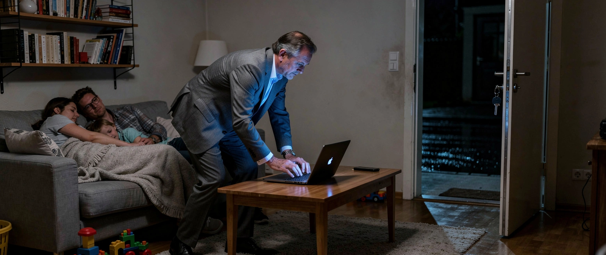

Ein echter Geheimdienst

In diesem Land gibt es ein Gebot, das aus Gestapo und Stasi gelernt hat: Nachrichtendienste sammeln, die Polizei greift ein. Seit dem 10. Juli liegt ein Referentenentwurf aus dem Bundesinnenministerium öffentlich vor, fast 700 Seiten stark. Er schreibt das Gebot um.
Alexander Dobrindt hat vorher gesagt, was er vorhat. Aus dem Nachrichtendienst solle „ein echter Geheimdienst“ werden.
Paragraf 60 sagt, was das heißt. Der Verfassungsschutz soll „verdeckt einwirken“ dürfen: Geräte funktionsunfähig machen, Datenverkehr umleiten, und, wörtlich, „die Veränderung der Übertragungsinhalte“. Zwei Buchstaben weiter im selben Absatz: die „Bereitstellung falscher Informationen für Beteiligte“.
Der Staat soll nicht mehr nur mitlesen. Er soll mitschreiben.
Paragraf 61 Absatz 4 nennt den „Eingriff in ein privates informationstechnisches System“ und das „heimliche Betreten einer Wohnung“. Absatz 5 regelt den Eilfall: Dann darf die Amtsleitung ihre Anordnung vollziehen, bevor der Unabhängige Kontrollrat über die Rechtmäßigkeit entschieden hat. Die Vorabkontrolle greift also dort nicht, wo sie gebraucht würde.
Paragraf 35 Absatz 4 schließt den Kreis. Von einer Mitteilung an den Betroffenen wird „endgültig abgesehen“. Wer nie erfährt, dass er überwacht wurde, klagt nicht.
Minderjährige dürfen nicht als Vertrauensleute angeworben werden. Es sei denn, die Amtsleitung lässt eine Ausnahme zu. Dann ab sechzehn.
Ende Mai stellte das ZDF eine Frage: „Verfassungsschutz bald ‚echter‘ Geheimdienst?“ Seit vier Tagen liegt die Antwort auf dem Tisch. Wir haben die Suchmasken befragt. Zum Entwurf findet sich bei tagesschau.de kein Beitrag, bei zdfheute.de auch nicht.
Der Rundfunkbeitrag beträgt 18,36 Euro im Monat. Er wird auch von denen bezahlt, deren Wohnung künftig heimlich betreten werden darf.
Mehr dazu: Das Gesetz, das keiner beschloss und Der Staat macht zu